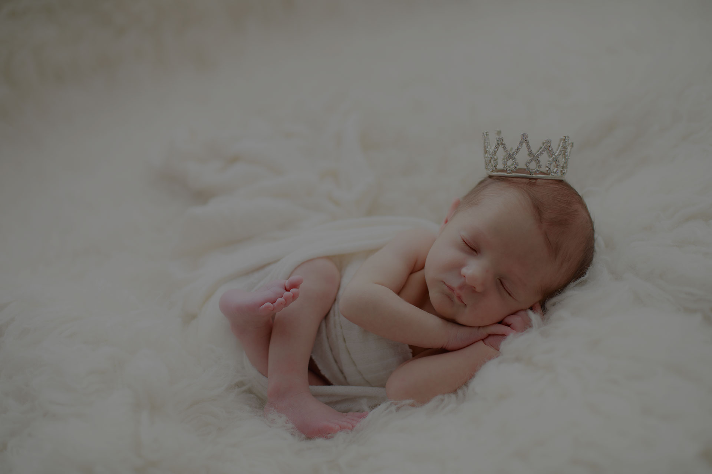

Newborn Photography Brisbane

Nowadays the women feel empowered showing their baby bumps in lingerie, gowns, and bikinis in the scenic locations. However, pregnancy is a beautiful thing for the parents because they are creating a living being and the baby is going to be nourished for the 9 months in the womb of the mother. Basically, maternity photo shoot and newborn photoshoot is the way to celebrate the welcome of the baby that the parents are going to meet after the hectic pain.
Reason to capture the newborn photography with us in Brisbane
Maternity and the newborn family photo shoot were not that much popular in the older days but nowadays it is the way to welcome the baby. This photo shoots are the strength and happiness for the women who are going through the hectic pain, stretch marks, and achy feet during the pregnancies. However, this is the best thing to happen for the new one that is being nourished in the womb. We gives the best outcome in any occasion, we have a quality staff, especially for new born family photography.
Why you hire our professional photographers for the new born photo shoot
There are many of the photographers who are famous but our professional new born photo shoot photographers are the best option to be considered. The professional photographer for the new born photoshoot has the qualities of viewing their job as an inspiration. In other words, not all photographers will offer you the precious memories that you deserve.
So here are some of the qualities of our professional new born photo shoot photographers:
Happiness is the main reason for the newborn photoshoot along with the mother and family members. The woman who is going through the pain of the 9 months, we offer her the joy and strength to handle the pain like a special thing. Pregnancies for the woman are a millennial thing because this experience empowers them the specialty of nourishing a living being in their womb.
– Understanding of the baby body capability and behaviors
This is the most important quality of our professional photographer should have. We understand the situation and scenario for the newborn photography Brisbane.
– Experience in the maternity photo shoot
We have a lot of experience in the field of the newborn family photo shoot. This experience helps us to design the excellent portfolio of the photoshoot. In other words, we create an amazing and skillful portfolio.
Session safety: Photo poses should never override established infant sleep guidance. Review safe sleep guidance from Pregnancy, Birth and Baby and the Red Nose Safe Sleep hub when planning a newborn session.
– Capability to capture fabulous images
We have great technologies and also deal with the scenario and colors match. The knowledge and experience help us to capture the great images of the baby and mother.
– Patience to capture the image
Our photographers have a lot of patience during the maternity photo shoot. Babies are very hard to be handled by strangers. The newborn baby cry and they are naughty at that time. So the photographers who have the patience at the time of the shoot are real photographers.
Props and privacy: Any sleep product or prop should align with ACCC guidance on products that are safe for baby to sleep in. Before sharing a child's images online, families can also review the eSafety Commissioner's child privacy guidance.
Conclusion
A maternity photo shoot is happiness for the woman and family members. So make it memorable with us in Brisbane
Newborn studio reference
Comparing newborn portrait styles?
Explore Sweetlife Photography for another specialist newborn studio experience in Brisbane's northern suburbs.